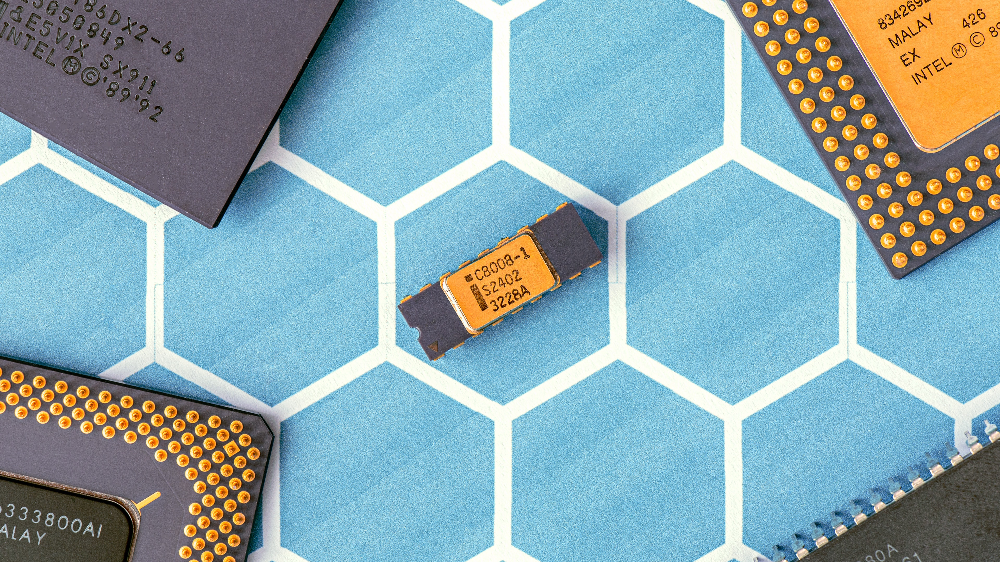

일반적으로 전기적으로 도체와 부도체 사이의 성질을 띠고 있는 물질이라고 하나, [1] 정확한 정의를 위해서는 에너지 띠(Energy Band)와 금지대역 또는 띠틈(Forbidden Zone/Band Gap) 등 양자 역학적 개념이 필요하다. 대표적으로 탄소-규소-저마늄[2]으로 이어지는 14족의 물질들이 이에 해당하며, GaAs와 같이 13-15족 등 14족을 가운데로 하는 두 물질의 화합물도 이 성질을 갖는 경우 가 있다.
보통 경제 기업, 산업 등에서 이야기 할 때의 반도체는 물질 그 자체보다 반도체 소자(Semiconductor Device) 혹은 집적회로(Integrated Circuit)를 이야기하는 경우가 많다. 이 분야는 반도체 물질을 이용해서 전기회로의 가장 기본적인 요소를 만들어내는 것이다. 상세한 것은 후술. 전자공학과의 공부 난이도를 올린 주범이다. 반도체 소자가 하나만 있어도 회로 방정식이 비선형 미분방정식으로 바뀌고, Asymptotic Analysis를 적용할 수 있는 특수한 경우가 아니면 회로 방정식을 해석적으로 풀 수가 없는 경우가 많다. 비선형 방정식을 수치해석적으로 풀기 위해서는 각종 수치해석법에 Iterative Method가 추가되어야 한다. 게다가 회로 레벨이 아니라 소자 레벨로 내려가면 유한요소해석을 Iteration을 하여 수렴할 때까지 돌려야 하기 때문에 컴퓨팅 파워를 많이 잡아먹는다. 보통 전자공학과를 많이 떠올리지만, 이는 설계의 영역이며 반도체 제조 공정은 거의 화학의 영역이라서 업계에서는 화학과와 신소재공학과 출신도 많이 보인다.